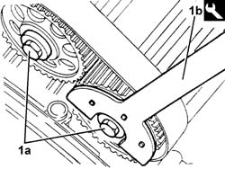
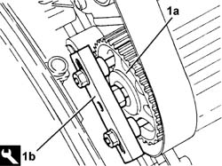

1032B55 LEFT HEAD TOOTHED DRIVEN PULLIES - R.R. FOR VERSIONS WITH AIR CONDITIONING
- Path
- Procedures > 10 ENGINE > 1032 timing system > 1032B BELT-DRIVEN TIMING SYSTEM > 1032B55 LEFT HEAD TOOTHED DRIVEN PULLIES - R.R. FOR VERSIONS WITH AIR CONDITIONING
- Kind
- repair procedure (removal / refitting; the operation number is the code)
- Applies to
- engines: 3.0 V6, 3.2 V6; all production periods
- Interactive page
- https://sloeber94.github.io/elrnDB-lThss/en/#/210228
Applies to: engines: 3.0 V6, 3.2 V6; all production periods
 Removing
Removing
 Refitting
Refitting- Open the boot, remove the cover on the left hand side and disconnect the negative battery lead.
See in Op. 4450B04 Right FRONT WHEEL (one) - R.R.
See in Op. 7055B54 PROTECTION/GUARD under engine - R.R.
See in Op. 7055B64 Engine compartment DUST SEAL in front wheel arch (one), left or right - R.R.
See in Op. 7055B42 FRONT WHEEL ARCH LINER (one), left or right - R.R.
See in Op. 7040D50 ENGINE COMPARTMENT UPPER SOUND INSULATION SHIELD - R.R.
See in Op. 1092G10 Engine components single drive BELT - R.R.
See in Op. 1016A42 LEFT CYLINDER HEAD IGNITION COIL COVER - R.R.
See in Op. 1072B50 Air CHAMBER - R.R.
See in Op. 5510C14 Ignition COILS - R.R.
See in Op. 1016A36 Left and right TAPPET COVERS - R.R.
See in Op. 1088B10 Engine coolant SUPPLY RESERVOIR - R.R.
See in Op. 1048A21 AIR INLET HOSE FROM INTAKE TO FILTER - R.R.
See in Op. 1048A28 vacuum air circuit resonator pipe - r+r
See in Op. 1008C10 Power unit REACTION ROD - Replace
See in Op. 1016A42 LEFT CYLINDER HEAD IGNITION COIL COVER - R.R.
See in Op. 1048A11 COMPLETE AIR FILTER -R.R.
See in Op. 1092A10 Crankshaft PULLEY - R.R. for versions with air conditioner
See in Op. 1088C24 Water pump PULLEY - R.R. with timing belt removed
See in Op. 1032B10 TOOTHED timing BELT - R.R. for timing adjustment or replacement
1. Undo the bolts (1a) for the left head toothed driven pullies, using the tool (1b) for counter-torque.
 | Description | Code | Function |
|---|---|---|---|
1b | Support for counter-torque | 1.860.831.000 | Support |

Applies to: engines: 3.0 V6, 3.2 V6; all production periods
1. Remove the left head toothed driven pullies (1a) using the tool (1b).
| Description | Code | Function |
|---|---|---|---|
1b | Extractor | 1.860.954.000 | - |

Applies to: engines: 3.0 V6, 3.2 V6; all production periods
Refitting
Removing- Fit the left head toothed driven pullies and secure them without tightening the bolts.
See in Op. 1032B10 TOOTHED timing BELT - R.R. for timing adjustment or replacement
See in Op. 1088C24 Water pump PULLEY - R.R. with timing belt removed
See in Op. 1092A10 Crankshaft PULLEY - R.R. for versions with air conditioner
See in Op. 1048A11 COMPLETE AIR FILTER -R.R.
See in Op. 1016A42 LEFT CYLINDER HEAD IGNITION COIL COVER - R.R.
See in Op. 1008C10 Power unit REACTION ROD - Replace
See in Op. 1048A28 vacuum air circuit resonator pipe - r+r
See in Op. 1048A21 AIR INLET HOSE FROM INTAKE TO FILTER - R.R.
See in Op. 1088B10 Engine coolant SUPPLY RESERVOIR - R.R.
See in Op. 1016A36 Left and right TAPPET COVERS - R.R.
See in Op. 5510C14 Ignition COILS - R.R.
See in Op. 1072B50 Air CHAMBER - R.R.
See in Op. 1016A42 LEFT CYLINDER HEAD IGNITION COIL COVER - R.R.
See in Op. 1092G10 Engine components single drive BELT - R.R.
See in Op. 7040D50 ENGINE COMPARTMENT UPPER SOUND INSULATION SHIELD - R.R.
See in Op. 7055B42 FRONT WHEEL ARCH LINER (one), left or right - R.R.
See in Op. 7055B64 Engine compartment DUST SEAL in front wheel arch (one), left or right - R.R.
See in Op. 7055B54 PROTECTION/GUARD under engine - R.R.
See in Op. 4450B04 Right FRONT WHEEL (one) - R.R.
- Connect the negative battery lead, then close the boot.
- Remove the vehicle from the lift.
See in Op. 0010T21 ENGINE COOLANT - Check density and top up if necessary
- [PR0010T21]
Topics linked from this page (19)
- 0010T21 ENGINE COOLANT - Check density and top up if necessary
- 1008C10 Power unit REACTION ROD - Replace
- 1016A36 Left and right TAPPET COVERS - R.R.
- 1016A42 LEFT CYLINDER HEAD IGNITION COIL COVER - R.R.
- 1032B10 TOOTHED timing BELT - R.R. for timing adjustment or replacement
- 1048A11 COMPLETE AIR FILTER -R.R.
- 1048A21 AIR INLET HOSE FROM INTAKE TO FILTER - R.R.
- 1048A28 vacuum air circuit resonator pipe - r+r
- 1072B50 Air CHAMBER - R.R.
- 1088B10 Engine coolant SUPPLY RESERVOIR - R.R.
- 1088C24 Water pump PULLEY - R.R. with timing belt removed
- 1092A10 Crankshaft PULLEY - R.R. for versions with air conditioner
- 1092G10 Engine components single drive BELT - R.R.
- 4450B04 Right FRONT WHEEL (one) - R.R.
- 5510C14 Ignition COILS - R.R.
- 7040D50 ENGINE COMPARTMENT UPPER SOUND INSULATION SHIELD - R.R.
- 7055B42 FRONT WHEEL ARCH LINER (one), left or right - R.R.
- 7055B54 PROTECTION/GUARD under engine - R.R.
- 7055B64 Engine compartment DUST SEAL in front wheel arch (one), left or right - R.R.